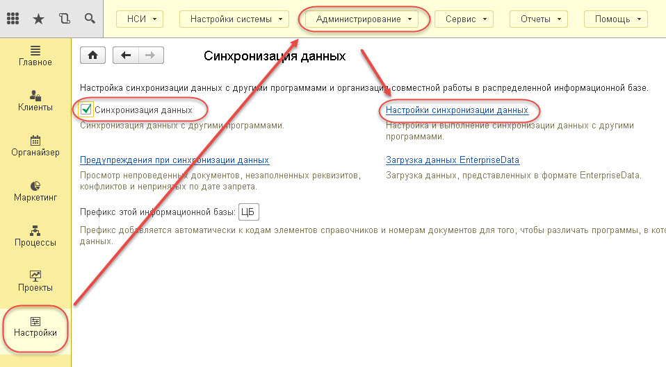
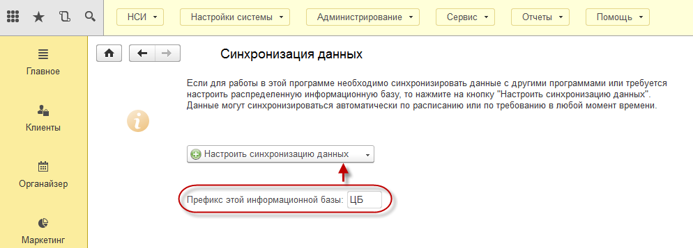
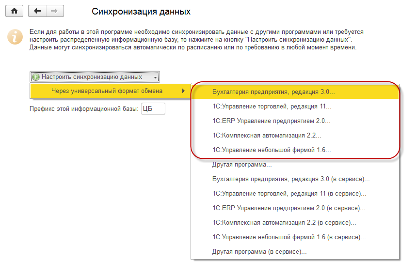
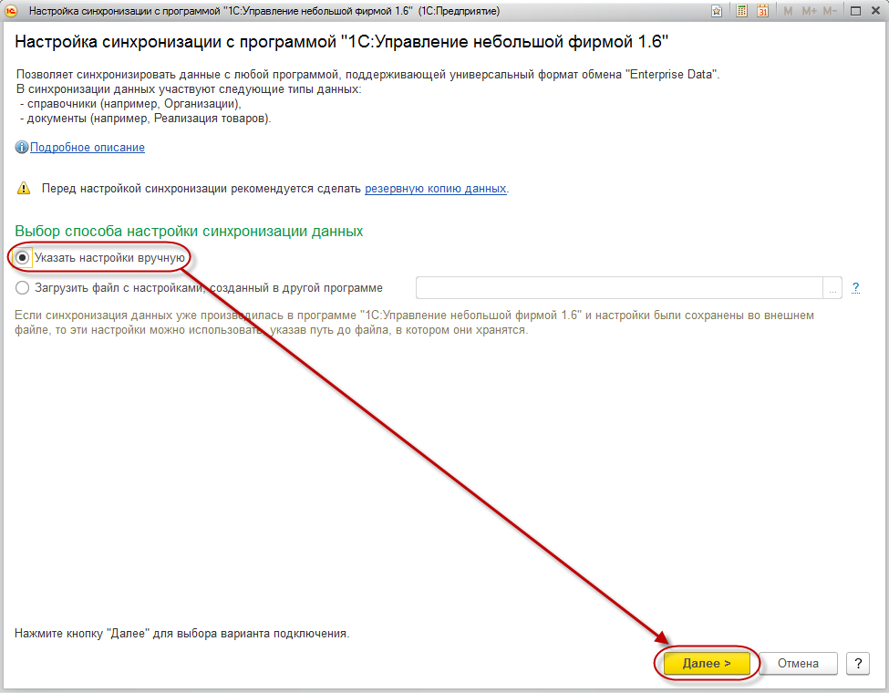
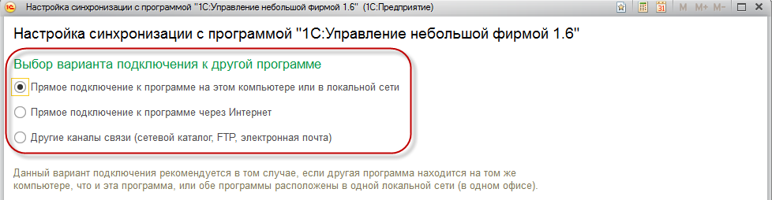

Для того, чтобы настроить обмен данными в 1С:CRM 3.0 необходимо перейти в раздел "Настройки" - "Администрирование" - "Синхронизация данных".
Здесь же необходимо включить опцию "Синхронизация данных" . Также можно указать префикс базы. Именно с этим префиксом будут обмениваться объекты, созданные в 1С:CRM 3.0 Переходим к настройке синхронизации по команде "Настройки сихронизации данных".

Если на предыдущем этапе не установили префикс текущей информационной базы - необходимо его указать и выбираем команду "Настроить синхронизацию данных".

В открывшемся меню выбираем используемую у Вас типовую конфигурацию фирмы "1С", с которой требуется настроить обмен данными:

В открывшемся окне мастера настройки синхронизации данных выбираем команду "Указать настройки вручную" и переходим на следующую страницу мастера по кнопке "Далее".

Настройка сихронизации предполагает три варианта подключения к другой базе:

Далее следует выбрать один из более подходящих каналов обмена между информационными базами:
Шаг 2. Другие каналы связи (сетевой каталог, FTP, электронная почта)